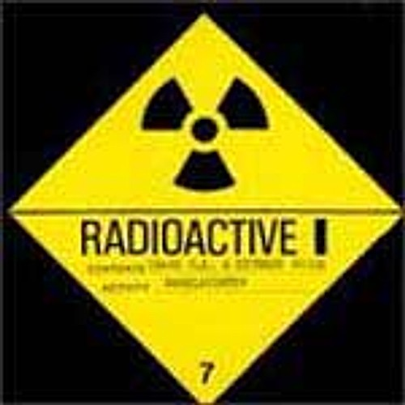

ＣＨＡＯＳ Ｕ．Ｋ．
ノイズコア！！！生粋のパンク・ロック・バンド！！
| ●タイトル | |
| CHAOS U.K.LP | |
| ●コメント | |
|
８３年はじめにリリースされたファーストアルバム。
私自身、これ聴いたときはすごく衝撃的でありました！！！！
何がなんだかわからないくらい歪んだノイジーなギター、のしかかる重いリズム、
力強い気持ちのこもったボーカル！！！言うことなしです！！！さ
らに、スピードのある曲だけでなく、スローな曲もあり、そこにもＣＨＡＯＳ
Ｕ．Ｋ．独得の攻撃性があり、なんだこりゃ！ハンマーで頭をかち割られたよーな威力？
いやそれ以上の衝撃があります！！！かなり最強なアルバム！！！！！ |
|
|
 |
●タイトル |
| RADIOACTIVE | |
| ●コメント | |
|
EXTREME NOISE TERRORとのスプリット。速い曲ばかりでハードコア・パンクそのもの！！頭にがつんと衝撃が得られます。 ※尚、E.N.Tも凄いです。E.N.Tは数枚しか聴いたことありませんがこれはすごくかっこいいです！ 是非聴いてもらいたい一枚！ |
|
| ●タイトル | |
| ＴＨＥ ＣＨＩＰＰＩＮＧ ＳＯＤＢＵＲＹ ＢＯＮＦＩＲＥ ＴＡＰＥＳ | |
| ●コメント | |
|
MOWERがVoでCHAOSがBやっております。CHAOSの声は力強く荒々しく素敵だけど、
MOWERの声もかすれててかなりかっこいいです！(ちなみに『KILL!』、『BRAIN
BOMB』はCHAOSが歌ってます。)しかし、この作品でMOWERは抜けてしまいます。。。 |
|
| ●タイトル | |
| ＴＨＥ ＭＯＲＮＩＮＧ ＡＦＴＥＲ ＴＨＥ ＮＩＧＨＴ ＢＥＦＯＲＥ | |
| ●コメント | |
| ９７年の初めに出ました。 ＳＥでは聴いたことあるのが流れてきます。で率直に言うと、とっつきやすいっす！ 70S PUNKも感じさせ、飽きのこない一枚です。 ジャンルで言うなら、ハードコアでもなく、ノイズコアでもなく、メロコアでもなく、Oi PUNKでもなく、CHAOS U.K.なのです！笑 | |